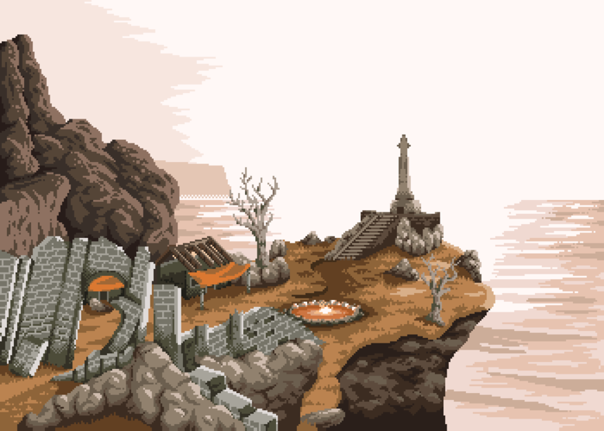
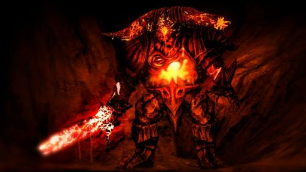
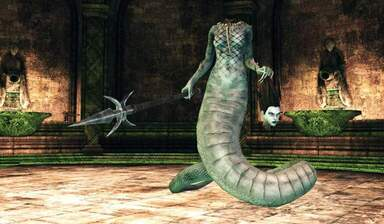

Majula
O Monarca também encontra o cavaleiro cabisbaixo, em muita amargura, Majula é um lugar passivo e pacificador, nesse local também é o local onde reside, a Shanallote, e a mesma diz ao Monarca que para provar seu valor ele deve entregar a ela as 4 grandes almas, o Monarca também é reconhecido como Portador da maldição por possuir um Sinal Negro, e em curiosidade vai atrás dessas almas, esplorando sem hesitação.
Após passar por muitas provações, o Monarca passa pelo Cais de ninguém e vai até a Bastilha perdida, que enviou os mortos vivos no passado para as celas do local, local também onde fica a Pecadora Perdida na elevação dos pecadores, dona de uma das grades almas, A Pecadora cometeu um pecado, tentar reacender a primeira chama, ela nunca se perdoou por fazer isso e escolheu se ausentar do mundo, até se esquecer de tudo, e viver em amargura.
ⵈ━═════╗◊╔══════━ⵈ

Pecadora Perdida
Após essa batalha, o Monarca se prova poderoso e a derrota, obtendo sua primeira Grande alma.
Em busca de sua próxima Grande alma, o Monarca peregrina até o seu segundo alvo, o Antigo rei de ferro, ele possui uma Grande alma e fica em meio ao magma em seu antigo reino, a masmorra de ferro, Lendas dizem que o castelo se afundou na lava, por conta de seu peso colossal, e também por culpa do trapaceiro conhecido como Demônio da fornalha, adentrou no forte.
ⵈ━═════╗◊╔══════━ⵈ

fortaleza de ferro

Demônio da fornalha
Então, o Rei ficou soterrado pela terra e o magma, assim se transformando em um Demônio raivoso, o resto do mundo esqueceu de seu reino, e do rei de ferro, o acesso a esse lugar é guardado pela Rainha Mytha, esposa do Rei de ferro, que guarda um amor gigante pelo antigo rei, ela se mantem no topo do pico terroso no Vale da colheita, ela deixou espalhar de si mesma, um veneno terrível que escorreu por todo o vale, mudando o local por completo.
ⵈ━═════╗◊╔══════━ⵈ

pico terroso

Mytha

Rei Demônio
o Monarca novamente enfrenta esses desafios, e sai com a vitoria novamente, voltando para Majula com sua 2° Grande Alma.
Em Majula o Monarca recebe ajuda do Ferreiro Gilligan, encontrado anteriormente no Pico terroso, ele ajuda o Monarca com suas escadas, para ele descer no poço.
Após o Monarca passar por uma Cidade precária e destruída abaixo do solo, e novamente desce, para uma Ravina ja esquecida a muitas eras, a Ravina negra, onde encontra uma criatura gigante feita de corpos humanos, conhecida como o Apodrecido, que vive em agonia no local.
ⵈ━═════╗◊╔══════━ⵈ

O Apodrecido
Uma batalha acontece e novamente o Monarca sai vitorioso com sua 3° Grande alma
Voltando para majula, o Monarca parte para a ultima Grande Alma, que fica na Enseada pedra luzente tseldora.
Para chegar até la, o Monarca faz o caminho contrario de majula, passando por um vale de árvores e criatura de veneno, chegando até os Bosques Sombrios onde enfrenta inimigos invisíveis e alucinações pela névoa, após enfrentar Najka, o Monarca chega em Pedra luzente tseldora
Essas terras pertencem ao duque, de mesmo nome, la o Monarca tera que enfrentar Freja, uma aranha colossal, que tem a ultima Grande Alma, necessária para abrir a porta do Santuário de Inverno, a Freja é um monstro criada pelo Duque, que após anos de pesquisa buscou fazer com que as aranhas reinassem sobre a terra, ele acabou se afundando em experimentos selvagens e bizarros com humanos, e outros mais extremos como a criação da Freja.
ⵈ━═════╗◊╔══════━ⵈ

Freja
Após derrotar a Freja, o Monarca encontra o Duque ja em seu estado Vazio, trancado, a 4° Grande Alma é conquistada, e agora começa a real provação do Monarca.
ⵈ━═════╗◊╔══════━ⵈ

🤔 Por que no new game+ você ganha almas extras?
Existem varias teorias em cima disso, pode ser uma reencarnação, uma premonição, um universo paralelo, mas o que se acredita muito é ser uma referência pelos criadores para homenagear o primeiro game, onde derrotando a Pecadora, você ganha a alma da bruxa antiga, que se refere a Bruxa de Izalith, assim como, A velha alma do rei = Gwyn / A alma do velho morto = Nito / Alma do dragão livido antigo = Seath.
ⵈ━═════╗◊╔══════━ⵈ
O Castelo de Drangleic.

Santuário de inverno
O Monarca vai até o Santuário de inverno, onde utiliza as 4 Grades Almas para passar, e chegar ao Castelo de Drangleic, chegando no castelo e passando por alguns inimigos e sentinelas assassinas, o Monarca chega em Nashandra que esta em sua forma Humana.
Ela com segundas intenções pede para o Monarca partir em busca do rei, Nashandra chama o Rei Vendrick de covarde, diz que abandonou o próprio reino... O Monarca segue em frente e passa uma serie de testes, que são na verdade os Obstáculos colocados por Vendrick para parar a Rainha, Nashandra não conseguiu passar pelo Cavaleiro de Espelho.
ⵈ━═════╗◊╔══════━ⵈ

cavaleiro do Espelho
que foi uma das criações de Aldia, que naquela época trabalha com Vendrick, Aldia criou fortes sistemas de defesa para Nashandra também não passar pelo Santuário de Amana, onde existem seres de aparência feminina, que usam suas vozes para controlar seres horríveis do Abismo da Escuridão, quase como um encanto sobrenatural, jogado sobre vagalumes que ficam sobre o local, a Rainha possivelmente não iria conseguir passar por esse local.
ⵈ━═════╗◊╔══════━ⵈ

Santuário de Amana
Por fim, Nashandra não teria sobrevivido a escuridão da Cripta dos Mortos-Vivos, e mesmo se sobrevivesse, iria morrer nas mãos de Velstadt, antes de alcançar Vendric
No Entanto até então o Monarca não sabe das intenções de Nashandra, e abre caminho por cada um desses desafios, chegando até o Rei, onde lhe encontra totalmente vazio e melancólico, perdido, sozinho, andando com sua espada no chão pra la, e pra ca, sem rumo.
ⵈ━═════╗◊╔══════━ⵈ
.jpg)
Vendrick (Vazio)
No fundo da sala o Monarca encontra uma pilha de roupas e armadura, do Rei, e em sua luva ele encontra uma coisa Brilhante, o Anel do Rei.
Esse anel da acesso para o Santuário da Carência... mas também, da Acesso a uma porta proibida, que leva até a Masmorra de Aldia.
Na masmorra descobrirmos inúmeras criações bizarras e grotescas de Aldia, um local completamente cheio de profanação e depravado, um caminho secreto nos leva a um dragão que guarda o caminho para o Ninho dos Dragões.
ⵈ━═════╗◊╔══════━ⵈ

Fortaleza de Aldia
Shanallote esta esperando o Monarca no inicio da area, dando para o Monarca sua primeira missão, afastar a maldição, e também confessando seu desejo, coisa que Aldia imaginava que Shanallote não iria ter, mas sim, tem, e ela queria um guerreiro poderoso para libertar ela desse fardo, dessa maldição, esse escolhido iria reacender o fogo, e dar um fim nessa busca pelo sucessor do rei.
Ela acredita que esse sucessor seja o Monarca, o Herói, o Escolhido, e da para ele seu item mais preciso, sua pena que permite o Monarca se locomover livremente, após isso o monarca avança passando pelos obstáculos e chegando até o Dragão ancestral, e fica surpreso pelo dragão ser amigavel, mesmo sendo artificial.
ⵈ━═════╗◊╔══════━ⵈ

Dragão Ancião
o Dragão entrega para o Monarca um objeto muito antigo, o Coração da Neblina de cinzas ele é essencial para seguir em frente e entrar na memória de gigantes e ter acesso ao passado, para compreender a história do reino, esses gigante estão enraizados no chão por mais de mil anos, através dessas viagens na memória dos gigantes, o Monarca vê o alcance da guerra, o como ela não só atingiu as muralhas, mas os centros urbanos e cidades também, em uma dessas batalhas ele encontra o Lorde dos Gigantes, que gera uma luta épica onde Monarca sai vivo e encerra o conflito.
ⵈ━═════╗◊╔══════━ⵈ

🤔 Aquele “guerreiro sem nome” é o Monarca?
Sim, o guerreiro sem nome, foi o Monarca no passado lutando no exército de Vendrick
Após derrotar o Lorde dos gigantes, o Monarca consegue a Afinidade com os Gigantes, um item que não é físico, e sim um pensamento ou sensação.
Parte 2 em andamento